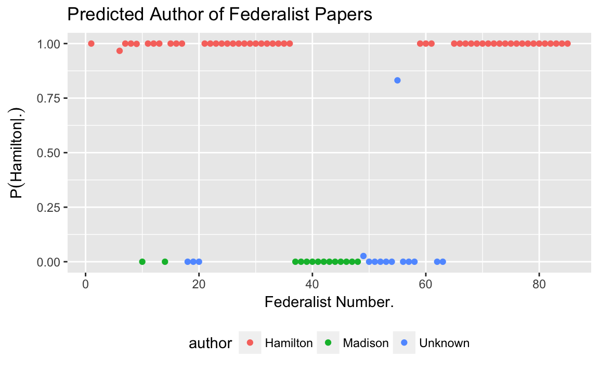

4 Naive Bayes
Prerequisites
This example will use the following libraries.
library("tidyverse")4.1 Introduction
Bayes’ theorem can almost immediately be supervised classification algorithms. The Naive Bayes classifiers are a family of classifiers which apply Bayes’ Rule to classify a discrete response \(y\) using observed features \((x_1, \dots, x_K)\), with a simplifying assumption of independence.
Suppose that \(y\) is the class of an observation; i.e., it is a discrete variable taking values \(j \in 1, \dots, J\). Suppose that \((x_1, \dots, x_k)\) is a vector of \(K\) observed features (predictors) for an observation. These can be discrete or continuous. We are interested in the probabilities of each class after having observed its features, which we can reformulate in Bayes’ rule. \[ p(y | x_1, \dots, x_k) = \frac{p(x_1, \dots, x_k | y) p(y)}{\sum_{j = 1}^{J} p(x_1, \dots, x_k | y = j) p(y = j)} \]
The “naive” modifier in “naive Bayes” comes from an additional assumption that distributions of features are independent conditional on the class, \[ p(x_k | y, x_1, \dots, x_K) = p(x_k | y) \] for all \(k \in 1, \dots, K\). This means that we can write \[ p(x | y) = p(x_1 | y) p(x_2 | y) \cdots p(x_K | y) \] This independence is a strong one, but will make this problem much more tractable. It is much easier to model and estimate the univariate \(p(x_k | y)\) probabilities, but much harder to model and estimate a \(K\)-variate distribution, \(p(x_1, \dots, x_K | y)\)
Using independence, we can rewrite the posterior distribution as, \[ \begin{aligned}[t] p(y | x_1, \dots, x_k) &= \frac{p(y) p(x_1 | y) \cdots p(x_K | y)}{\sum_{j = 1}^{J} p(y) p(x_1 | y) \cdots p(x_K | y)} \\ &= \frac{p(y) \prod_{k = 1}^K p(x_k | y)}{\sum_{j = 1}^{J} p(y) \prod_{k = 1}^K p(x_k | y)} \\ &\propto p(y) \prod_{k = 1}^K p(x_k | y) \end{aligned} \]
To apply Naive Bayes to predict the class of data:
Choose the distributional form of \(p(y)\) and the \(k\) distributions \(p(x_k | y)\)
Find the maximum a posteriori (MAP) estimates of \(\hat{p}(y)\) and \(\hat{p}(x_k | y)\) for all \(k \in 1, \dots, K\) using training data.
Predict the most likely class for new data with features \(x_1, \dots, x_K\), \[ \hat{y} = \arg \max_y \hat{p}(y) \prod_{k = 1}^K \hat{p}(x_k | y) \]
4.2 Examples
4.2.1 Federalist Papers
The Federalist Papers comprise 85 articles published under the pseudonym “Publius” in New York newspapers between 1787 and 1788. It was written by Alexander Hamilton, James Madison, and John Jay to persuade the public to ratify the Constitution. John Jay wrote five papers, and Alexander Hamilton wrote 51, and James Madison 14. The authorship of the remaining 15 papers is (was) disputed between Hamilton and Madison.
In an early example of empirical Bayesian statistics and computational NLP, F. Mosteller and D. L. Wallace used naive Bayes to classify the disputed articles and conclude that there is strong evidence to suggest that Madison wrote all the disputed articles.
Data on the federalist papers is contained in two datasets included in the jrnold.bayes.notes package.
The dataset federalist contains metadata on each document, including the author and title.
The dataset federalist_wordcounts contains word counts of 70 function words used by Mosteller and Wallace in their analysis, and the count of all other tokens ("OTHER").
We will load both files
data("federalist_wordcounts", package = "jrnold.bayes.notes")data("federalist", package = "jrnold.bayes.notes")The objective is to estimate the author of a document given features of that document. For this example, we will only use the counts of the 70 function words (and other) provided in the data.
For a single document, let \(y\) be the author of the document. Let \(w\) be the total number of words in the document. Let \(x_1, dots, x_K \geq 0, \sum x_k = w\) be the counts of each word in our vocabulary. These word counts are our features.
We need to choose distributional forms of \(p(x_1, \dots, x_K | y)\) and \(p(y)\). Since \(y\) is a discrete unordered categorical variable, we will use a categorical distribution, \[ p(y | \pi) = \mathrm{Categorical}(\pi) . \] There are \(\pi_j\) for \(j \in 1, \dots, J\) parameters, which represent the probability of category \(j\), where \(\pi_j | 0\), and \(\sum \pi = 1\).
For the distribution \(p(x_1, \dots, x_K | y)\), we will use the multinomial distribution, \[ p(x | y = j, \theta) = \mathrm{Multinomial}(x | \theta^{(j)}) . \] The parameter \(\theta_j\) is length \(K\) vector, such that \(\sum_{k = 1}^K \theta_k^{(j)} = 1\). The superscript \((j)\) indicates that \(\theta^{(j)}\) is specific to a particular class. Thus there are \(\text{classes} \times \text{features} = J \times K\) parameters to estimate for this model. \[ p(y | x_1, \dots, x_K) \propto \mathrm{Multinomial}(x | \theta, y) \mathrm{Categorical}(y | \pi) . \] This model is called a multinomial Naive Bayes model.
To use a multinomial model to classify new observations we need to estimate \(\theta\) (\(J \times K\) parameters) and \(\pi\) (\(J\) parameters). For these, we will use the maximum a posteriori estimator. The MAP estimator for the prior probability of class \(y\) is \[ \hat{\pi}_j = \frac{ \sum_i I(y_i = j) + 1}{n + J} . \] This is the number of documents in class \(j\) divided by the total number of documents in the training data.
Calculate the proportion of documents written by Hamilton and Madison:
p_author <- federalist %>%
filter(author %in% c("Hamilton", "Madison")) %>%
count(author) %>%
mutate(pi = (n + 1) / sum(n + 1))
p_author
#> # A tibble: 2 x 3
#> author n pi
#> <chr> <int> <dbl>
#> 1 Hamilton 51 0.776
#> 2 Madison 14 0.224The MAP estimator for the conditional probability of \(p(x | y)\) is \[ \hat{\theta}_k^{(j)} = \frac{(\sum_i I(y_i = j) \cdot x_k) + 1}{(\sum_i I(y_i = u)\cdot w) + K} . \] The estimator \(\hat{\theta}_{k}^{(j)}\) is the fraction of times that word \(k\) appears among all words in all documents in category \(j\).
p_words_author <- federalist_wordcounts %>%
# keep only Hamilton and Madison
filter(author %in% c("Hamilton", "Madison")) %>%
# count terms used by each author
group_by(author, term) %>%
summarise(count = sum(count)) %>%
ungroup() %>%
# calculate p(w | c) for each author
group_by(author) %>%
mutate(theta = (count + 1) / sum(count + 1)) %>%
ungroup()
head(p_words_author)
#> # A tibble: 6 x 4
#> author term count theta
#> <chr> <chr> <int> <dbl>
#> 1 Hamilton a 2496 0.0199
#> 2 Hamilton all 436 0.00347
#> 3 Hamilton also 35 0.000286
#> 4 Hamilton an 636 0.00507
#> 5 Hamilton and 2702 0.0215
#> 6 Hamilton any 365 0.00291Note that in our MAP estimators of both \(\theta\) and \(\pi\), we add one to the observed counts in order to keep the probabilities strictly greater than 0. These can be justified using as conjugate prior distributions for the categorical and multinomial distributions.
Now that we’ve estimated \(\hat{p}(y | x)\) and \(\hat{p}(y)\) we can predict the classes for both the papers where the author was observed, and those that it wasn’t observed.
Calculate the probability of each class, \(p(y_{test} | x_{test}, \hat{theta})\), for all documents given the learned parameters \(\theta\).
pred_doc_author <- federalist_wordcounts %>%
# keep only Hamilton, Madison, and undetermined
filter(!author %in% "Jay") %>%
# remove actual author
select(-author) %>%
# merge with p(y | x, theta) probabilities
# note - this works because words includes 0 counts
left_join(select(p_words_author, term, author, theta), by = "term") %>%
# calculate the total probability of the document
group_by(number, author) %>%
# note: + 1 only used in the estimation
# log probabilties are used because probabilityes are small
summarise(logp_doc_author = dmultinom(count, prob = theta, log = TRUE))
Calculate the posterior distribution by adding the prior probabilities of each author:
p_author_doc <-
left_join(pred_doc_author,
select(p_author, author, pi),
by = "author") %>%
# do calculations on the log scale
mutate(logp_author = log(pi),
logp_author_doc = logp_doc_author + logp_author) %>%
select(-pi) %>%
# calculate p_author_doc
group_by(number) %>%
mutate(p_author_doc = exp(logp_author_doc - log(sum(exp(logp_author_doc)))))Dataset with the probability that the document was written by Hamilton.
predictions <- p_author_doc %>%
filter(author == "Hamilton") %>%
select(number, p_author_doc) %>%
mutate(pred = if_else(p_author_doc > 0.5, "Hamilton", "Madison")) %>%
# add actual authors
left_join(select(federalist, author, number), by = "number") %>%
# for those with authors, is it correct
mutate(correct = (author == pred)) %>%
# no missing values in author
mutate(author = if_else(is.na(author), "Unknown", author))
For documents with known authors, the Naive Bayes method predicts the actual author in all cases.
filter(predictions, author != "Unknown") %>%
group_by(author) %>%
summarise(accuracy = mean(correct))
#> # A tibble: 2 x 2
#> author accuracy
#> <chr> <dbl>
#> 1 Hamilton 1.
#> 2 Madison 1.For the documents with an unknown author, it predicts most of them to have been written by Madison.
filter(predictions, author == "Unknown") %>%
ungroup() %>%
count(pred)
#> # A tibble: 2 x 2
#> pred n
#> <chr> <int>
#> 1 Hamilton 1
#> 2 Madison 14ggplot(predictions, aes(x = number, colour = author, y = p_author_doc)) +
geom_point() +
labs(y = expression(paste("P", group("(", paste("Hamilton", "|" ,"."), ")"))),
x = "Federalist Number.",
title = "Predicted Author of Federalist Papers") +
theme(legend.position = "bottom")
4.2.2 Extensions
Evaluate the effectiveness of this model using \(\hat{p}(y)\) that gives equal weight to each author? Do any predictions change?
Instead of a multinomial model for \(p(x | y)\) use independent Poisson distributions for each \(p(x_k | y, \lambda)\). For an MAP estimator of the rate parameter of the Poisson distribution use the following: \[ \hat{\lambda}^{(j)}_k = \frac{\sum_i I(y_i = j) x_k + 1}{\sum_i I(y_i = j) w_i + K} \] So, \[ p(x_k | y) = \mathrm{Poisson}(\lambda_k) + \mathrm{Poisson}(w) . \]
Instead of a multinomial model for \(p(x | y)\) use independent binomial distributions for each \(p(x_k | y, \lambda)\), \[ p(x_1, \dots, x_k| y) = \prod_{k = 1}^K \textrm{Binomial}(x_k | w, \theta_k) \] Take the word count of each document as given. A MAP estimator of the frequency parameter of the Binomial distribution is \[ \hat{\theta}^{(j)}_k = \frac{\sum_i I(y_i = j) x_k + 1}{\sum_i I(y_i = j) w_i + K} \]
Instead of a multinomial model for \(p(x | y)\) use independent Poisson distributions for each \(p(x_k | y)\), \[ p(x_k | w, \theta) = \mathrm{Poisson}(w * \lambda^{-1}) \] The parameter \(\theta\) is the rate at which the word \(k\) is used in text. A MAP estimator for \(\theta_k^{(j)}\) is, \[ \hat{\theta}^{(j)}_k = \frac{\sum_i I(y_i = j) x_k + 1}{\sum_i I(y_i = j) w_i + K} \] This is the same equation as the Binomial distribution MAP estimator for \(\theta\), and have the same interpretation (frequency of appearance of a term). However, the likelihoods are slightly different.
Use cross-validation to evaluate the Naive Bayes models that use multinomial, Poisson, and binomial likelihoods using cross-validation. There are several reasonable ways to proceed with cross validation. Choose a reasonable one associated with the prediction task.
Classify the documents in the
[spam](https://www.rdocumentation.org/packages/kernlab/versions/0.9-25/topics/spam)dataset included in the kernlab R package into “spam” and “not spam” using a Naive Bayes model. Choose the appropriate distributions for the likelihoods of the features. Estimate this model “manually”, without using an existing implementation of Naive Bayes.
4.3 Details
4.3.1 Generative vs. Discriminative Models
Naive Bayes is a generative model. Generative models are distinguished from discriminative models. A generative model estimates the join-distribution \(p(x, y)\), and is so-called because it generate new data for both \(x\) and \(y\). A discriminative model only estimates the conditional distribution \(p(y | x)\); it cannot generate new \(x\) values, but can only predict \(y\) given \(x\).
Naive Bayes is a generative model. The distributions of \(p(x | y)\) and \(p(y)\) are specified, and \[ p(x, y) = p(x | y) p(y) . \]
Regression models only estimate \(p(y | x)\) are discriminative models. If we estimate the parameters of a regression model, we can cannot estimate the distribution of new \(x\).
Note that a discriminative model can be used to estimate the conditional distribution \(p(y | x)\) since \[ \begin{aligned} p(y | x) = \frac{p(x, y)}{p(x)} = \frac{p(x | y) p(y)}{p(x)} . \end{aligned} \]
4.3.2 Estimation
With Naive Bayes we want to classify observations (\(\tilde{y}\)) given the features (\(\tilde{x}\)) of those new observations, and training data (\(y\), \(x\)).
Naive Bayes models define \(p(x | y)\) and \(p(y)\). Let \(p(x | y, \theta)\) be the conditional distribution of a feature given the class \(y\). Let \(p(y | \pi)\) is the prior distribution of the classes \(y\). By the definition of conditional distributions, \[ p(x, y | \theta, \pi) = p(x | y, \theta) p(y | \pi) . \] Note: we also make the assumption that \(\theta\) and \(\pi\) are independent.
The posterior distribution of \(\theta\), \(\pi\) is \[ \begin{aligned}[t] p(\theta, \pi | y, x) &= \frac{p(y, x | \theta, \pi) p(\theta, \pi)}{p(y, x)} & \text{Bayes' Theorem} \\ &= \frac{p(x | y, \theta) p(y | \pi) p(\theta) p(\pi)}{p(y, x)} & \text{conditional distribution}\\ &\propto p(x | y, \theta) p(y | \pi) p(\theta) p(\pi) \end{aligned} \]
The maximum a posteriori (MAP) estimator of \((\theta, \pi)\) is \[ \begin{aligned}[t] \hat{\theta}, \hat{\pi} = \arg \max_{\theta, \pi} p( y | x, \theta, \pi) &= \arg \max_{\theta, \pi} p( x | y, \theta) p(y | \pi ) p(\theta) p(\pi) \end{aligned} \] Since \(\theta\) and \(\pi\) are conditionally independent, we can maximize the parameters separately, \[ \begin{aligned}[t] \hat{\theta} &= \arg \max_{\theta} p( x | y, \theta) p(\theta) \\ \hat{\pi} &= \arg \max_{\pi} p(y | \pi ) p(\pi) \\ \end{aligned} \]
For many distributions, the MAP estimators of their parameters has a closed form, and thus easy to estimate. That we factor \(p(x | y, \theta)\) into conditionally independent distributions \(p(x_1 | y, \theta_1)\), \(p(x_2 | y, \theta_2)\), …, allows us to choose these distributions to allow for particularly easy MAP estimators.
4.3.3 Prediction
Suppose that we would like to classify new observations \(\tilde{y}\) after observing features of those observations, \(\tilde{x}\).
We would use the same likelihood function as we estimation, \[ \begin{aligned}[t] p(\tilde{y} | \tilde{x}, \theta, \pi) &= \frac{p(\tilde{x} | \tilde{y}, \theta) p(\tilde{y} | \pi) }{p(\tilde{x} | \theta, \pi)} \\ &\propto p(\tilde{x} | \tilde{y}, \theta) p(\tilde{y} | \pi) \end{aligned} \]
However, the values of \(\theta\) and \(\pi\) are unknown. Generally, in Bayesian inference we would calculate the posterior predictive distribution by using the posterior distribution of \(p(\theta, \pi | x, y)\). \[ \begin{aligned}[t] p(\tilde{y} | \tilde{x}, x, y) &= \int_{\pi}\int_{\theta} p(\tilde{y} | \tilde{x}, \theta, \pi) p(\theta, \pi | y, x)\, d\theta \,d\pi \\ &= \int_{\pi}\int_{\theta} \frac{p(\tilde{x} | \tilde{y}, \theta) p(\tilde{y} | \pi)}{p(\tilde{x} | \pi)} p(\theta, \pi | y, x)\, d\theta \,d\pi & \text{Bayes' Theorem} \\ &= \int_{\pi}\int_{\theta} \frac{p(\tilde{x} | \tilde{y}, \theta) p(\tilde{y} | \pi)}{p(\tilde{x} | \theta, \pi)} p(\theta, \pi | y, x)\, d\theta \,d\pi \end{aligned} \]
However, in this case we will ignore the uncertainty inherent in estimating \(\theta\) and \(\pi\), and simply plug in the MAP estimators, \[ \begin{aligned}[t] p(\tilde{y} | \tilde{x}, x, y) &= p(\tilde{y} | \tilde{x}, \hat{\theta}, \hat{\pi}) \\ &=\frac{p(\tilde{x} | \tilde{y}, \hat{\theta}) p(\tilde{y} | \hat{\pi})}{p(\tilde{x} | \hat{\pi}, \hat{\theta})} \\ &\propto p(\tilde{x} | \tilde{y}, \hat{\theta}) p(\tilde{y} | \hat{\pi}) \end{aligned} \]
Commonly we would like to estimate the most likely class. The most likely class of an observation given its features, \(\tilde{x}\), and training data \(x\) and \(y\) is, \[ \hat{y} = \arg \max_{\tilde{y}} p(\tilde{y} | \tilde{x}, x, y) = \arg \max_{\tilde{y}} p(\tilde{x} | \tilde{y}, \hat{\theta}) p(\tilde{y} | \hat{\pi}). \]
4.4 References
- Scikit-Learn, Naive Bayes
- Harry Zhang (2004) The Optimality of Naive Bayes.
- Jurafsky slides on Text Classification and Naive Bayes
- R package klaR contains an implementation of naive Bayes.